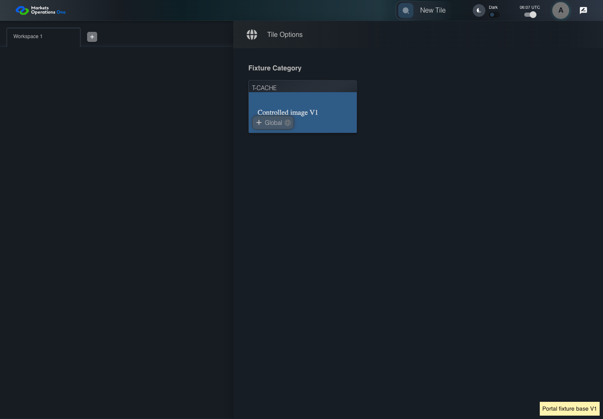
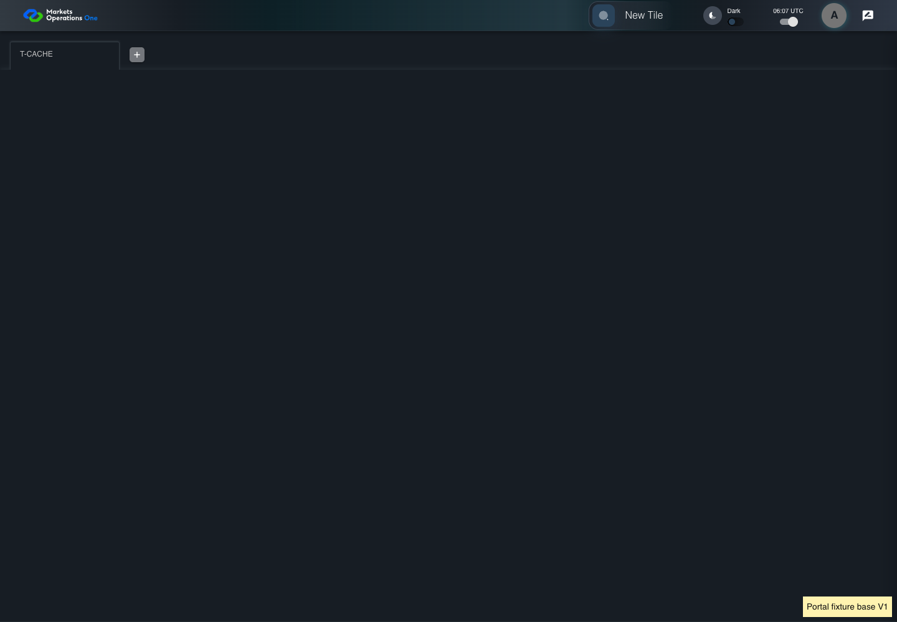

KNOW-043 real HTTP cache and controlled tenant lifecycle
PASS · application/run-050/know-043-real-http-cache-and-controlled-tenant-lifecycle-76e420a940a5-attempt-1 · ACTUAL_APPLICATION_LOCAL_SERVICES
Actual current React shell and real Chromium HTTP cache. Local HTTP fixture server supplies synthetic Alice, permissions, base entry wrapper, container, tile, trade, lazy content, CSS and images. V1/V2 markers identify controlled fixture assets. No browser routing, production CDN, real business tenant, or changed base binary acceptance.
2026-10-22T06:06:58.409Z to 2026-10-22T06:07:02.820Z
Assertions and result · Artifact manifest · Exact run inputs and source hashes
Result SHA-256:9ece56ef1de4a60d0477b10d495c64cff2237810a5399cb923ed45fcaa21e5c6Machine observations
- cache-fixture-scope.json
180c208601227dc2214d90fa0fc5f3899bca354ad8cfd087762fdcf2f553b8c1 - catalog-permission.json
f4b249e0974caf480a456db9faf6dd89966d123da1ee9db20b082ad878fceff1 - http-cache-observations.json
28d4e6fbd1f0253f5cbdae52772d2909729cd72702aec273e6184aa639a790f1
Screenshot capture: CAPTURED. Named frames: 11.
Step screenshot bindings: COMPLETE. 10/10 canonical steps have execution screenshots.
Bindings measure structural coverage only. They do not establish screenshot content quality or relevance.
Screenshot content review: NOT_REVIEWED. Recorded context: 0/11 frames. Identical image bytes: 6 repeated frames. Recorded context does not establish human visual review.
Canonical step timeline
Given Alice uses an isolated browser profile with the synthetic identity and permissions defined for this case
Execution: PASSED.1. step-01 Visible state after step 1: Given Alice uses an isolated browser profile with the synthetic identity and permissions defined for this case
2026-10-22T06:07:00.636Z · 1440×1000
Step: /Users/lushevol/code/github/ratan-release-impact/workbench/tasks/ui-test-coverage-20261022/test-cases.md:11958
SHA-256:e073a145e20d9367b1e52935b861d3caa20dc309ef8375a6848ae59cfbff4262And Alice has catalog permission for the synthetic tile with exact title "T-CACHE"
Execution: PASSED.
2. step-02 Visible state after step 2: And Alice has catalog permission for the synthetic tile with exact title "T-CACHE"
2026-10-22T06:07:00.722Z · 1440×1000
Step: /Users/lushevol/code/github/ratan-release-impact/workbench/tasks/ui-test-coverage-20261022/test-cases.md:11959
SHA-256:e073a145e20d9367b1e52935b861d3caa20dc309ef8375a6848ae59cfbff4262Image bytes match frame 1. An unchanged image can be valid for consecutive assertions. This match does not establish correct step content.
And The browser cache contains a completed T-CACHE V1 load
Execution: PASSED.
3. step-03 Visible state after step 3: And The browser cache contains a completed T-CACHE V1 load
2026-10-22T06:07:01.200Z · 1440×1000
Step: /Users/lushevol/code/github/ratan-release-impact/workbench/tasks/ui-test-coverage-20261022/test-cases.md:11960
SHA-256:c9068abec5542286d76bb1f9ab2201d46631a39536d27effdad28b5746e2c7fbAnd The controlled server continues serving unchanged V1 entries and assets
Execution: PASSED.
4. step-04 Visible state after step 4: And The controlled server continues serving unchanged V1 entries and assets
2026-10-22T06:07:01.284Z · 1440×1000
Step: /Users/lushevol/code/github/ratan-release-impact/workbench/tasks/ui-test-coverage-20261022/test-cases.md:11961
SHA-256:c9068abec5542286d76bb1f9ab2201d46631a39536d27effdad28b5746e2c7fbImage bytes match frame 3. An unchanged image can be valid for consecutive assertions. This match does not establish correct step content.
When Alice reloads the browser page containing the portal
Execution: PASSED.
5. step-05 Visible state after step 5: When Alice reloads the browser page containing the portal
2026-10-22T06:07:01.555Z · 1440×1000
Step: /Users/lushevol/code/github/ratan-release-impact/workbench/tasks/ui-test-coverage-20261022/test-cases.md:11962
SHA-256:e073a145e20d9367b1e52935b861d3caa20dc309ef8375a6848ae59cfbff4262Image bytes match frame 2. An unchanged image can be valid for consecutive assertions. This match does not establish correct step content.
And Alice clicks the text "New Tile" on the portal workspace page
Execution: PASSED.
6. step-06 Visible state after step 6: And Alice clicks the text "New Tile" on the portal workspace page
2026-10-22T06:07:01.671Z · 1440×1000
Step: /Users/lushevol/code/github/ratan-release-impact/workbench/tasks/ui-test-coverage-20261022/test-cases.md:11963
SHA-256:c068600c5fa37a13e929f981ef77d5da6ee8c40aaa4dd72f0b810baa91e756d5Then the drawer panel headed by "Tile Options" is visible on the portal workspace page
Execution: PASSED.
7. step-07 Visible state after step 7: Then the drawer panel headed by "Tile Options" is visible on the portal workspace page
2026-10-22T06:07:01.753Z · 1440×1000
Step: /Users/lushevol/code/github/ratan-release-impact/workbench/tasks/ui-test-coverage-20261022/test-cases.md:11964
SHA-256:c068600c5fa37a13e929f981ef77d5da6ee8c40aaa4dd72f0b810baa91e756d5Image bytes match frame 6. An unchanged image can be valid for consecutive assertions. This match does not establish correct step content.
When Alice clicks the text "T-CACHE" in the drawer panel headed by "Tile Options"
Execution: PASSED.
8. step-08 Visible state after step 8: When Alice clicks the text "T-CACHE" in the drawer panel headed by "Tile Options"
2026-10-22T06:07:01.857Z · 1440×1000
Step: /Users/lushevol/code/github/ratan-release-impact/workbench/tasks/ui-test-coverage-20261022/test-cases.md:11965
SHA-256:376de2fd713871e0ba61225ec5e587a1c37d7e05da19f3b57ed49def7fe3e45fThen The T-CACHE fixture content displays version "V1"
Execution: PASSED.
9. step-09 Visible state after step 9: Then The T-CACHE fixture content displays version "V1"
2026-10-22T06:07:02.228Z · 1440×1000
Step: /Users/lushevol/code/github/ratan-release-impact/workbench/tasks/ui-test-coverage-20261022/test-cases.md:11966
SHA-256:4bf066c1df8a3e53d9487fa3473cf37fcbc6c8092bc3a7523470dcd89c165102And No missing-chunk error is visible in the portal error alert
Execution: PASSED.
10. step-10 Visible state after step 10: And No missing-chunk error is visible in the portal error alert
2026-10-22T06:07:02.294Z · 1440×1000
Step: /Users/lushevol/code/github/ratan-release-impact/workbench/tasks/ui-test-coverage-20261022/test-cases.md:11967
SHA-256:4bf066c1df8a3e53d9487fa3473cf37fcbc6c8092bc3a7523470dcd89c165102Image bytes match frame 9. An unchanged image can be valid for consecutive assertions. This match does not establish correct step content.
Additional named frames

The final visible state after the named test assertions.
2026-10-22T06:07:02.406Z · 1440×1000Step: Test source: /Users/lushevol/code/github/ratan-release-impact/workbench/e2e/audit-specs/cache-lifecycle.spec.ts:14
SHA-256:
4bf066c1df8a3e53d9487fa3473cf37fcbc6c8092bc3a7523470dcd89c165102Image bytes match frame 10. An unchanged image can be valid for consecutive assertions. This match does not establish correct step content.
Screenshots establish visible state only. Assertions and traces support functional claims.